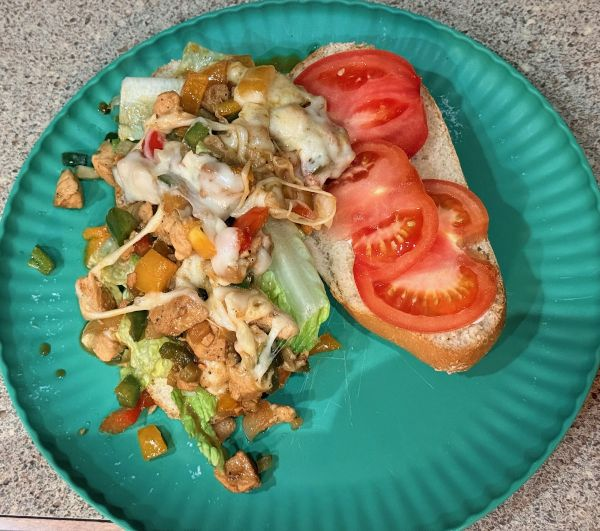
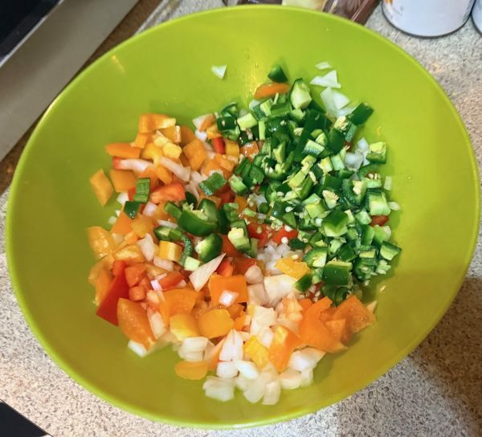
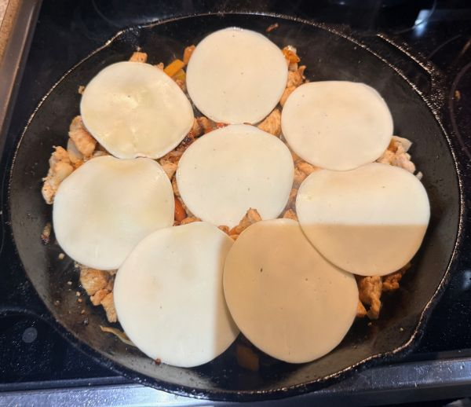
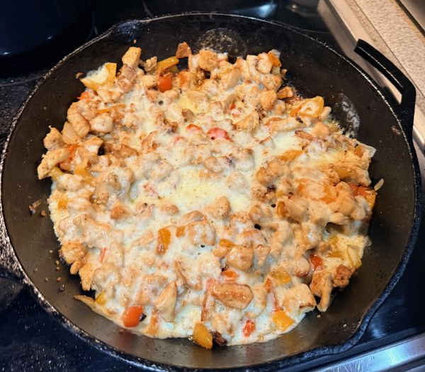

Chicken Philly Cheasesteak
Description
Try this chicken version of the classic Philly Cheasesteak! Savory chicken for the heart-healthy conscious. Alter this recipe in any way to suit your taste. I like to add jalepeno peppers to the veggitables to add a little spice!
Ingredients
- 2-3 Chicken Breasts
- 2 Bell Peppers
- 1 Onion (I use yellow or white)
- 1 Tomatoe sliced
- Shredded or torn lettuce
- 2 TBSP Veggitable Oil or Butter
- 1/2 tsp Garlic Powder or 1 TBSP of minced garlic
- 1/2 tsp Onion Powder
- 1 tsp All Purpose Meat & Veggie Seasoning
- Salt & Pepper to taste
- Sub rolls or Philly Cheasesteak Rolls
- Provalone Sliced Cheese
- Mayonaise
- Ranch Dressing
Steps
- Cut up Chicken to bitesized chunks and dice veggies.
 - Oil pan with veggitable oil and pan-fry chicken.
- When chicken is nearly cooked through, add veggitables

- When veggitables are soft and onions begin to become transluscent, layer the
top with sliced provalone. Cover with lid until cheese melts.

 - Lay bread open in oven heated to 425 F for 2-3 minutes (until just beginning to brown).
- Pull bread out of oven. Spread mayo on one side and ranch dressing on the other
- Put lettuce on one side and sliced tomatoes on the other.
- Fill middle with Cheasesteak mixture and enjoy!